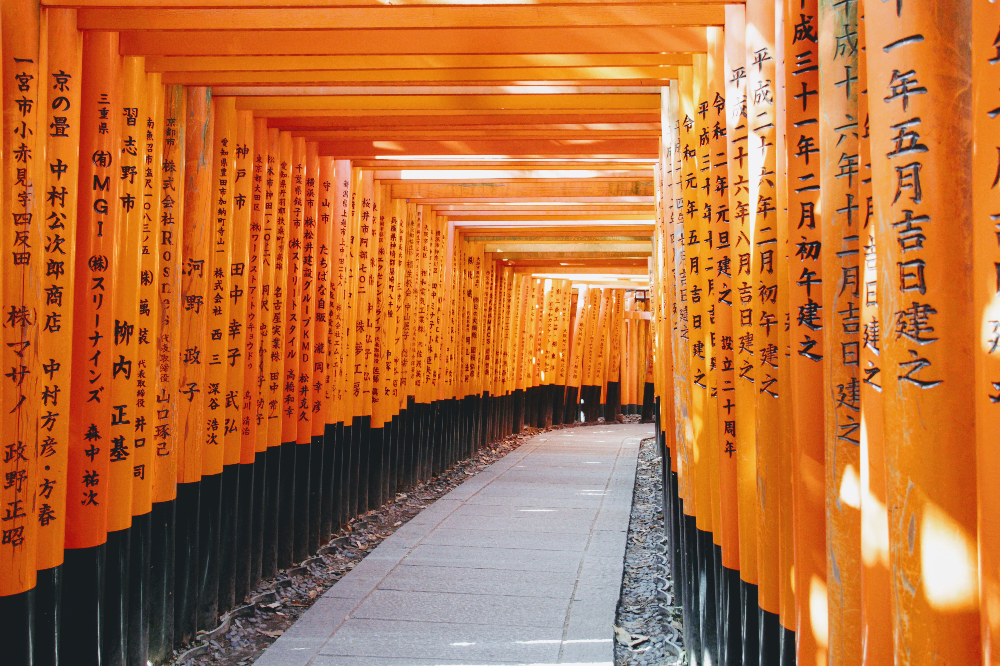
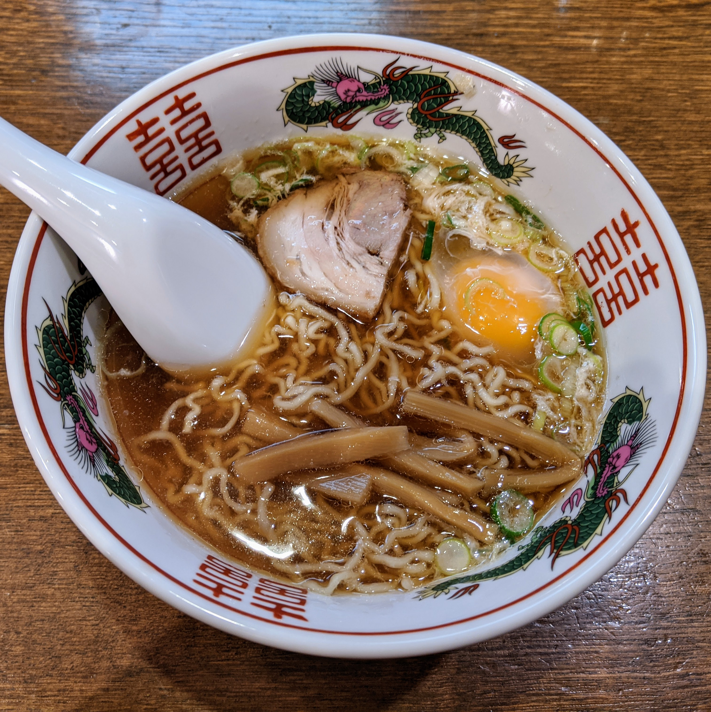

跟着我妈蹭的日本五年签两年了仅仅用了一次，于是筹备了一下决定在二零二零 的新年第一天出发去日本旅游一周。时间虽然定了不过拖延症如我，除了机票是 直接买了最便宜的去名古屋，第二天的具体路线都是前一天晚上才定下来。 好在也就我妈和我，路线随机就随机一点啦。(●'◡'●)
最终流程大致如下：
2020.01.01
JR：机场·名古屋
名古屋：Oasis21
2020.01.02
名古屋：名古屋城·热田神宫·大虚观音寺
新干线：名古屋·京都
2020.01.03
京都：伏见稻荷大社·千本鸟居·清水寺·三年坂·二年坂·宁宁小路·石屏小路·八版神社·花见小路·拉面小路
新干线：京都·金泽
2020.01.04
金泽：兼六园·金泽城公园·近江町市场
浓飞巴士：金泽·白川乡
白川乡
浓飞巴士：白川乡·高山
高山：高山拉面·老街
2020.01.05
高山： 露天温泉·新穗高缆车·北阿尔卑斯山顶·飞弹牛
2020.01.06
高山：东山步道
浓飞巴士：高山·名古屋
名古屋：买买买
2020.01.07
JR：名古屋·机场
机场：二楼可以逛吃的说，尝试了金箔冰淇淋（失望），炸鸡（美滋滋），还可以出去瞭望一波机场
元月一日 出发（￣︶￣）
从无锡出发提前两小时到，没想到机场居然提前一小时才开始值机， 下楼从自动售货机里取了预约好的漫游超人时间还绰绰有余。另一个角度想， 小机场真挺方便的人也少。下午五点左右到日本后坐JR一路晃晃悠悠到名古屋， 七点多在旅馆收拾完又出门逛了一下Oasis21熟悉周边环境。
Oasis21是一个环保理念的地标建筑，也可以理解为一个盛满水的玻璃屋。水之飞船的顶部水池边可以拍到电视塔全景，不过去的时候没有开灯。
名古屋 (名古屋城·热田神宫·大虚观音寺)
上午坐名城线出发去名古屋城，下车后首先经过名城公园。
虽然是冬天有些萧瑟，公园里有不少晨练和遛狗的老人。我妈最大的感慨就是，日本人虽然瘦但看着精神矍铄，连养的宠物也是精瘦，和老美养的心宽体胖完全不是一个风格。
名古屋城可能是因为新年，白天有表演晚上有夜市，一进去就看到可爱的忍者装束还带着小朋友学忍者招式可以说很萌了。
名古屋城的天守阁还未开放，重建的本丸御殿排了一个多小时才终于进去。做工精致金碧辉煌，不过一个门里一般只能看见一个房间，没有动漫里那种数个房间门依次打开的层次感，所以有种在逛普通的壁画博物馆的感觉并没有特别震撼。毕竟要说金碧辉煌我还是觉得梵宫更贵一些 2333
此处请允许我安利一下西南隅橹，在进门后左手边走到底的那个角楼，一个是排队人数比刚进门就要排队的隅橹人少的多，第二是排队到最后上顶楼欣赏天守阁角度超棒。没错上图就是在这里拍的~
下午出发去据说已经有1900年历史的日本最古老和地位最高的神宫之一热田神宫，碰巧他们正在新年祈福。虽然到处都是人从众，倒也秩序井然，路边还有很多小吃摊点生意火爆。
神宫正前方人们争相抛撒硬币祈福，看来各国祈福都要首先捐钱。
我们去买了门票，不过拿到手一看似乎是新年祈福的流程。会有人做仪式扫除污秽之类，之后还有个参拜，然后领了甜食就带着我妈去喝抹茶了~
估计是因为新年祈福，附近交通管制结果我们找不到地铁了。更为悲催的是这 附近维持秩序的老爷爷们都不会英文，我们鸡同鸭讲了十分钟加上肢体语言也 毫无进展。幸运的是后来来了一位乘客懂英文，给我们指了坐哪站以及去哪里 下，这样才终于到达了大须观音寺。
大须观音寺是商业街的起点，车站是在商业街的终点，所以下车后走了三四条街的样子才终于到达，香火相当旺盛。商业街里人头攒动，还有个爱丽丝小屋，入口的门做的很小看上去很有意思，不过因为要赶去京都所以并没有做过多的停留。
人生第一次新干线，就是名古屋去京都！说实话我超级期待的，但真的坐上去之后，都怪我坐过了高铁要求太高 /(ㄒoㄒ)/~~ 舒适度和速度我都觉得高铁更胜一筹啊其实作为中国人挺自豪的。
晚上八点多在京都的旅馆落脚完，我妈决定休息但亢奋的我坚持出门沿着四条町途径动漫里高频率出现的鸭川，经过祇园最终到达八坂神社。回城途中实名为京都人打call，在那个我披着小斗篷还瑟瑟发抖的晚上，我见到了这位勇士在寒风中和歌而舞。
元月三日 京都（伏见稻荷大社·千本鸟居·清水寺·三年坂·二年坂·宁宁小路·石屏小路·八版神社·花见小路·拉面小路）
千本鸟居是最最最想去的地方所以一大早就出发前往目的地，伏见稻荷大社。元月三日依旧人满为患，看来新年祈福并不只有一天。不得不说天津板栗真是火遍海内外，以及君の日本语本当上手 233333
跟着路牌随着人潮艰难地向千本鸟居缓慢移动，想拍照片太难了因为大家都要拍拍拍。
妈妈走了一段突然身体不适，当时我们就决定下山，结果下山通道意外得人少，也算是因祸得福。
离开伏见稻荷大社之后，我们启程去清水寺开始了一段京都暴走。
这条线路是我在查攻略时候意外发现的：清水寺 - 三年坂 - 二年坂 - 宁宁小路 - 石屏小路 - 八版神社 - 花见小路 - 四条町。每个景点距离都很近，还会路过高台寺，再加上我们的旅馆在四条町也就是重点附近游览起来效率极高。
清水寺正对着的商业街行至一半便是三年坂，三年坂接着是二年坂。这两条商业街两边都是旧时建筑的造型，吃的喝的玩的应有尽有，也有不少有人在路口拍照，人流密集很容易走散。
出了二年坂向左走一些就是宁宁小路，人流明显稀疏也安静了许多。宁宁小路稍微走一段左转便是石屏小路，由于这里不可以拍照，所以这里只留下了我们的脚印与回忆。比宁宁小路相比，石屏小路更显幽静，路边民宅的植物也是精心修剪过的模样。
离开石屏小路稍微走一点就是八坂神社啦，鼠年的图画可爱极了。个人觉得晚上的时候更为好看，张灯结彩的喜庆热闹，还有路边小摊子上食物滋滋冒着的香气，颇有人间烟火的味道。
这条线路虽然游览起来效率很高，但是有个问题就是我高估了妈妈的身体承受情况，清水寺走到八坂神社由于并不算近，加之人流缓慢延长了时间， 所以到八坂神社的时候她已经很疲乏了。于是她选择了于此直接坐公交去京都站，而我则走去花见小路后去旅馆拿行李再与她在京都站回合。
来日本，一定要吃一次拉面 =w= 所以，京都站的拉面小路不容错过。
上次去大版吃了一兰拉面和一风堂，这次查了一下想试试拉面之神的大胜轩。卑微的我又发现这里的服务员并不说英文，经过了一番艰难的操作食物终于当当当摆在我的面前，他们还给我拿了一个纸围裙以防我吃的时候弄脏衣服哈哈。
拿到时候的时候我是懵逼的，因为我不知道怎么吃。比划了一番是左碗倒在右边碗里，还是右碗倒在左边碗里，结果服务员小姐姐摇了摇头表示都不是，应该夹一些面到右边浸没然后食用。出乎意料的好吃，应该是因为以前吃拉面都会觉得很咸而这个乌冬口感清爽，汤料又有鱼的味道，感觉很满意。

饱餐一顿之后出发去金泽。
浓飞巴士的票可以在金泽站附近名铁的营业处当场购买，也可以网上购买。去合掌乡的票实在是太抢手了，个人还是建议提前购买比较妥当。整段买不到可以分段购买，一般来说早上合掌乡去高山会有很多余票，晚上金泽去合掌乡则会有很多余票。其实如果可以去合掌乡就不用太担心之后的票，浓飞巴士也提供非预定巴士，那种就是按照先来后到直接上车的班次。
金泽不愧是温泉出名的地方，到了旅馆意外得知居然可以泡汤，我妈和我就很跃跃欲试。谷歌了半天泡汤洗澡礼仪还打电话问了酒店工作人员半天，终于战战兢兢又美滋滋的出发。注意，宾馆提供浴巾但是一定记得带小毛巾啊啊啊，在美国习惯了大浴巾擦身子的我，泡汤的时候用手托举着大浴巾顶在头顶真的尬翻全场。
元月四日 金泽（兼六园·金泽城公园·近江町市场) - 白川乡 - 高山（高山拉面）
金泽的21世纪美术馆有很出名的“游泳池”，不过可惜去的日子闭馆了所以未能成行。幸运的是元月四日是兼六园二零二零开园的第一天，虽然没有冰雪点缀显得园内景色萧条，但是日式庭院特有的禅意之美让人步于其间时倍感宁静。
亭台楼阁在这里仅仅是自然的点缀，日式庭园更注重与自然的和谐。即便是萧条如冬日，也会有鲜艳的色彩择日而绽。
兼六园旁边就是金泽城公园，因为买了套票还参观了五十间长屋。
不得不说日本人清扫真的是一尘不染。五十间长屋需要脱鞋之后入内参观，三层楼走了来来回回也不少路，出门的时候看看袜子还是雪白的。
算算午饭时间快到了就去了近江町市场。因为新年大半的店尤其是卖海鲜的基本都关了，二楼餐厅又人满为患排队也都是半小时起步。因为要赶去合掌乡的巴士所以只有一个小时左右吃饭，最终去了负一楼吃的冠军咖喱。原以为印度咖喱吃多了对日本咖喱不会有太多想法，结果意外的好吃，关键才670日元，可以说是性价比超高。
对白川乡其实是很期待的，世界遗产白川乡合掌造建筑，冰雪里的童话世界。但是不得不说，不下雪的合掌乡真的感觉就是一个普通的农村。
参观完白川乡就启程坐浓飞巴士去高山。
途中开始下雪，等到达高山的时候雪已经很大了。妈妈很开心，她其实一开始想去北海道看雪，但是被我以飞机票过于昂贵的理由拒绝了，结果新干线坐了几次都快赶上飞机票的价格，不禁有些暗自懊恼。此番可以看雪自然兴致勃勃，以至于到高山之后也没有马上休息，而是跟我出门一起去吃了高山拉面。
个人觉得高山拉面口感更接近酱油面，可以点小碗不咸不淡分量也很合适。美中不足的是那个鸡蛋我以为是温泉蛋，想着来一个豪华版拉面结果上来一看居然是生的，看来还是高估了日本人对熟食的追求。
元月五日 高山（露天温泉·新穗高缆车·北阿尔卑斯山顶·飞弹牛 ）
经过一夜的飘雪，地面上的积雪如同甜软的棉花糖，我妈更是趁着我还没起床早早出门逛了一圈。南方人嘛，看到雪总是很激动的。
第一个目的地是室外温泉。
其实原本想去完雪山之后回程美美的泡个温泉再回旅馆，卖票的小姐姐打电话过去询问时间发现下午两点室外温泉就关闭了，于是修改行程先去泡澡然后再去坐缆车。套票的温泉似乎不是热门景点，我们要求下车的时候司机小哥哥还特意问我们要去的是哪里，是不是确认要在这里下车。下车后步行七八分钟就到了温泉馆，乍一看还颇有山间隐居的幽静之感。
更神奇的是居然有自称电视台的人在摄像，还对我们进行了采访。
“中国明明也有很多温泉为什么中国人要来日本这样的山里泡温泉？” “其实我真的就是简单的买了个套票并没有多想。”
“露天温泉是男女混浴的，身为外国人可以接受吗？” “？！！我不知道啊，应该会尝试一下不行就撤。”
没错然后我身体力行地去了男女混浴的露天温泉。
其实我有如此勇气是因为：露天温泉只有我一个人 23333333 包场了哈哈哈哈哈哈哈。
露天温泉是男女有各自的入口，女性的入口有一个池子相对比较隐蔽也有墙，热水也是从这里流淌出来。男性入口的池子正对着雪山的风景，有一个地方可以趴着看风景。两个池子是相连的可以互相走动。水温相较于室内温泉明显低多了，属于泡着暖暖又不烫人的温度，而且也可以根据自己的喜好通过调节与出水口的位置来获得满意的温度。
最重要的是，这是可在下雪之时泡露天温泉。每当山风吹过被积雪压低的枝桠，本应刺骨的风褪去了严寒，带下的雪也失去了凉意，他们变成了来自雪山温柔的问候抚过发梢，落在我的肩上悄然融化。要不是之后还要去坐雪山缆车，我可以这样一直悠哉悠哉直到闭馆。
泡完温泉收拾一番之后就向着北阿尔卑斯山顶进发。

乘坐新穗高缆车上山，缆车分为两段。第一段较为平缓，雪景尚可但和山顶比起来就平平无奇了。虽然高山已经有了不少积雪，我们来的路上也看着群山被积雪覆盖，但真的到山顶的时候还是不得不为这个银装素裹的世界而惊叹。乘坐缆车到顶之后可以登上顶楼瞭望，也可以选择去一楼走进雪地中撒欢。

讲道理山顶太冷了零下十几度我回去的路上就感觉不行了，脚底冻得毫无知觉加止不住地流鼻涕，差点感冒，在旅馆冲了好久热水澡还不停地喝我妈给我用人参泡的热水，才将将顶住。总之一定要做好保暖措施再去雪地拍照。
但即使拼着感冒的风险，大晚上我依然和我妈风雪兼程地出门，去吃飞弹牛。

猪五花和飞弹牛相比，完全不能打。对比以前吃的神户牛肉，感觉飞弹牛更肥一些，相应的比较入口即化，缺点的话自然就是吃多了容易腻。最后摸着圆滚滚的肚皮回旅馆啦~
元月六日 高山 (东山游步道) + 名古屋（购物）
提前买了下午回名古屋的巴士所以上午还可以逛一逛高山。
清晨出发去高山阵屋附近的东山游步道东侧起点，开始晨练 233333 山上的步道还偶遇当地的学生和老师一起晨跑。
前一天还大雪纷飞，第二天已经是晴空万里了。雪后的空气格外清新，晨间的风还透着昨日的凉意但并不凛冽，清早树影斑驳，与眼前的雪景交织成了安静的模样。散步于其间放空自己，真是让人不禁觉得日本人民的长寿是很有原因的。
下山后这条路还连接了高山许多神社寺庙，不过应该是因为新年大部分都闭门谢客。好在我们也只是信步游览，能进庭院一观便已经感觉颇有风情了。
东山游步道走完后可以走到最繁华的那条商业街，一直直走可以走到宫川早市。吃吃喝喝，当地农产品，旅游纪念品，都是应有尽有。其实后来有去另一个早市，据说是在高山阵屋前面，不知道是地点不对还是时间不对那里反而空无一人，有些后悔没有在宫川早市多待一会儿了。
要说感触最深，莫过于庙宇之多庙宇之近，与种类之丰富。它们可以一家挨着一家，大的要走拾阶而上，再大些还能有自己的庭院，有两三件屋房。可往小里说，可能一个路边的神龛，就有当天供奉好的水果。寺庙神社在这里感觉不是一种隆重的祈祷，而是一种完全融入在平日的生活里，像呼吸一样平常的存在。
时常就是走着走着，又在城市的某个角落走进了别人的信仰。
下午乘坐浓飞巴士回到了名古屋。没有直接回酒店，而是在名古屋站附近开始买买买。当时查的是推荐大国药妆店，价格居中种类也居中。千里马是我们从机场来名古屋的时候，一位本地小姐姐安利的，网上说东西便宜但种类较少。
根据实际购物体验来说，千里马的东西确实便宜，有些大国药妆有的东西千里马就没有，但是爆款一般千里马都有。印象深的就是pita（好像是这么拼？）口罩，千里马就便宜很多所以我们都在千里马买的，但是手感上感觉比大国药妆的口罩薄了很多，看包装似乎是一样的 = = 这个成了一个未解之谜。除开价格，明显的感觉到大国药妆服务热情还保持微笑。千里马的服务员怎么说呢，我觉得他们可能也没有不耐烦吧你问啥她答啥，但是就是那种多说一个字都浪费的感觉，达不到膈应但我尽量避免去问问题。不过有一个是千里马有大国没有的，就是小瓶神仙水。大国只有大瓶让我感到卑微。
最后的晚餐之鳗鱼三吃。
服务员不出意料的只会日语，好在我机智出发前已经查好了菜名，点单这点小事完全难不倒我。让人意外的是，在吃上鳗鱼之前他们居然拿出了一个有中文英文韩文的鳗鱼食用指南，看来国际客人不少哈哈。
鳗鱼三吃的流程其实很简单。首先把鳗鱼分成四份。第一份，吃原味。第二份，拌上葱和芥末品尝。第三份，倒入茶水茶泡饭。最后一份就按照自己的喜好自行挑选啦。
评价的话，其实鳗鱼有点焦了我感觉有一丢丢失望来着。
元月七日 机场
机场如海关之前如果时间多，推荐去二楼逛一逛，有表演有音乐有瞭望台还有不少美食。
身为任天堂粉首先去Pokemon Store交了信仰税买了Mimikyo挂件，感到美滋滋。
接着绕路美食角，买了人生中第一个金箔冰淇淋（在金泽没买我好后悔）。讲道理这个小姐姐在我面前试了三次挑起金箔都失败了，于是她换了一张金箔，但可能技术不佳虽然最终成功的挑起来，金箔是窝在一起的。然后不知道是不是成本控制，她犹豫了一下，还是把那个窝成一团只剩三分之一表面积的金箔丢我冰淇淋上了。观感体验不是特别好，吃起来的话，金箔没啥味道，至于冰淇淋，就是一个无功无过冰淇淋吧。
因为不想吃大餐绕了一圈吃的最后买了炸鸡。看介绍似乎开了很久样式也好看，询问了一下没有现货要等十五分钟，新鲜炸出来的鸡腿真好吃 =w= 韩国的炸鸡我觉得已经独步天下了，好吃不油腻还分外有浓郁肉香。日式炸鸡也不错，口感更精瘦一些，爱鸡人士表示满意。
旅途结束
回国的心，砰~砰~砰~
到家的我，吃~吃~吃~
其实日本各种文化建筑看着都很亲近，但又到不了惊艳。若要比金碧辉煌我见过梵宫，若要比雕栏画栋我们有故宫，若要说要比匠心独具苏州园林移步换景，若要说山清水秀草色烟光神农架也不遑多让，要怪可能得怪中华文化源远流长我们有太多令人目不暇接文化瑰宝，耳濡目染下总会在不经意间挑剔起来。
但日本对于文化财产的重视与保护值得我们学习，他们的景点有不少重修的，技艺精致做工考究，且参观者都要脱鞋游览以做到对建筑最好的保护。大大小小的景点在市区内星罗棋布，完全地融合进了他们的生活，甚至可以说他们的所居所至所为都被我们都当作了景风景的一部分。反观国内很多景点，商业街可能都是一家公司修的，直觉得感觉千篇一律。商业就是商业，和居民的生活是割裂的，来游玩的人只能看到作为景点想被展示的那一部分。
这次去日本比上次感觉好多啦~
大阪有最大的地下网络，可长时间在地下感觉很压抑。上次去的时候就单纯觉得日本人压力好大，密密麻麻地生活在如此拥挤的城市。这次去名古屋的时候，第一感觉是干净通透。虽然免税店还是挤得人头晕，但室外甚至地铁都并不算拥挤（除去新年祈福）。而且名古屋迷之感觉俊男靓女多好多，打扮风格比大阪更西式大气一些。看谁都是一幅和气悠闲的模样，觉得生活在这里可以按照自己的节奏慢慢来会很舒心。
祝福日本越来越好，山川异域，风月同天，顶住新冠，奥运成功。
最后以我心爱的冰淇淋结尾，下次还要去吃！